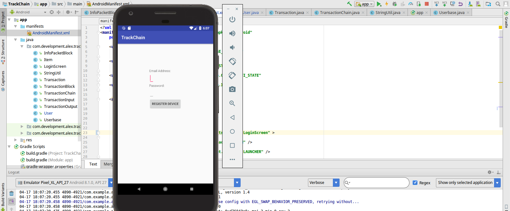
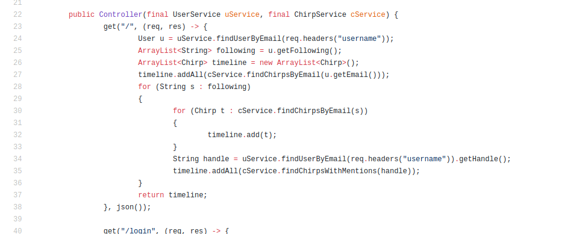

Table of Contents
Computer Science
High-Performance Computing
Working with machine learning, computational finance, and network science applications demands a lot of computing power which has sparked my interest in High-Performance Computing. I'm mostly self-taught in this arena, with some support from professors and advisors, but techniques such as parallel programming have helped me save weeks of computing time in various projects from my work at IPAM, my Honors Research, and my research on computational fact-checking. Currently, I'm playing around with Cluster computing and have put together a Pi Cluster to experiment with clusters, distributed computing, and Hadoop/Kubernetes.


Information Technology
I learned a lot about hardware, operating systems, and networking from Westminster and even more from messing up my personal computers and needing to fix them. Additionally, a lot of the projects I have undertaken have needed a lot of computational resources, leading me to learn about how to acquire them. I've worked with laptops, desktops, clusters, and servers, running various Linux distros, MacOS, and Windows because my research and various professional positions such as Titan Radio's System Administrator and my work as an Information Science Researcher at IPAM. The short list of things I've worked with:
- Containers & Virtual Machines (Docker, VirtualBox,...)
- Media Servers (Jackett, Plex, QBitTorrent, Radarr, Sonarr,...)
- Network Storage (FreeNAS, Nextcloud, Samba,...)
- Operating Systems (FreeNAS, LinuxMint, Ubuntu, Windows XP/7/10,...)
- Scripting (Bash, Cron, Python,...)
Machine Intelligence
My interest in Machine Intelligence was originally sparked by a passion for algorithmic trading, but since learning about the complexities of the subject I've delved deeper into it. My work in Information Science at the Institute for Pure and Applied Mathematics gave me an excellent opportunity to work with Deep Learning, Neural Networks, and NLP. My Bachelor's thesis focused on a biologically-inspired theory of machine intelligence called Hierarchical Temporal Memory.
Robotics
In 2018 I participated in the International Trinity Fire Fighting Robot Contest and my team was awarded "Best Robot in Division Prize for Senior Unique Division" and "North American Award for Level 2." I find working with robotics interesting because I'm intrigued by the logic behind autonomous robotics (like Lenny, pictured below).
Software Engineering
I've developed a variety of Android applications, software for information extraction, software for Titan Radio, and more. I like the challenge of computational problem-solving.
Web Development
I am a self-taught web-developer. I initially taught myself HTML, CSS, and JavaScript to make this website as a "virtual resume," but I have found that web development can be very interesting and challenging.
Economics and Finance
Computational Finance
My passions for finance and computer science have lead to an interest in computational finance and algorithmic trading. This interest was encouraged by working with a professor at Westminster who algorithmically trades currencies and it has become a hobby of mine.
Corporate Credit Analysis
I have garnered a lot of experience and respect for the field of Corporate Credit Analysis over the last few years working with Moody's Investor Service's VP Ben Nelson in a financial analyst program. Through the program, I gained a familiarity with financial documents such as 10Ks and Annual Reports, learned the various quantitative and qualitative aspects considered in assessing the credit-worthiness of an entity, and been able to apply by skills in time-series statistics to help the team attempt to build econometric models to forecast important numbers such as earnings.
Portfolio Management
As an Assistant Manager of Westminster's Student Endowment Fund, I have years of experience managing hundreds of thousands of dollars in equity and fixed-income investments. My job revolves around performing due diligence on potential companies to investigate the fundamentals and market setting, tracking the statistics of the portfolio such as Beta, and providing technical expertise when evalutating technologically-oriented companies such as semiconductor producers, software companies, and various "x"-tech companies (for example, Fintech, Insurtech, etc.). Our portfolio has outpaced the professionally-managed portion of the endowment fund and the S&P 500 while maintaining a Beta of one during the time I held the position.
Risk Analysis
Everything I do is about managing risk and probabilistic forecasts. Whether I am working for an Insurtech company, managing a porfolio, or performing Corporate Credit Analysis, I am calculating probabilities of things going wrong. I really enjoy it, it has given me the opportunity to learn about and utilize really interesting code and risk management tools such financial derivatives.
Mathematics and Operations Research
Algebra
Algebra is interesting to me because I enjoy abstracting the structure of things to better understand how and why they work. I was originally intrigued by Algebra because of Computer Science, namely hashing and encrypting, but I found myself to really enjoy working with Groups, Rings, and Fields.
Graph Theory and Network Science
Graphs were first introduced to me through an Independent Study where I worked with Dr. Fontes-Merz on the Minimum Square Deviance k-Chinese Postman Problem and as I got further into Computer Science, I encountered graphs and networks more and more. I have come to enjoy Graph Theory, especially Algorithmic Graph Theory and Network Science and I've worked on Computational Fact-Checking through Knowledge Graphs.


Game Theory
As one would expect from someone interested in Math and Economics, I am interested in Game Theory. I love its unintuitive conclusions about rational behavior, but my passion for Game Theory is mostly in Incomplete Information Games and Information Economics: understanding how information effects decision-making.
Logic
Originally intrigued by the logical puzzles presented in Math and Computer Science, I ended up exploring Logic more seriously because of Modal Logic and Epistemic Modal Logic. I was really influenced by my interest in Incomplete Information Games and how information affects agents, and have gone on to really enjoy exploring the field, such as the book Reasoning About Knowledge.

Topology
Topology intrigues me for many of the same reasons Algebra does, it allows us to abstract space and understand how different spaces work and the differences between them. My interest is primarily in Algorithmic Topology and Topological Data Analysis.
Programming Languages
Bash
On the professional side of things, I have developed Bash scripts to automate tasks on Unix systems for Titan Radio (WWNW) and WCN 24/7 and in a variety of computationally focused research projects. Additionally, I use Linux operating systems on my personal computers, usually Linux Mint, though I am also familiar with other distributions such as Gentoo and Ubuntu. This combination has lead to me getting very familiar with Bash and it saves a lot of time, especially when I am setting up a new computer.
C++
C++ is amazing for its speed in applications where it matters such as my work in algorithmic finance and it's low level is great for working with hardware such as robotics. Our automonous robot Lenny, which won the Senior Custom division and North America Award at the Trinity Fire Fighting Robot Contest, was written in C++ and deployed on an Arduino and Raspberry Pi in order to handle the various sensors.
CSS
I use this style sheet language to make websites (like this one!) look better than they would with just HTML. Cascading Style Sheets enables me to do a lot of interesting thing stylistically like layout the page in an aesthetically pleasing way and when paired with Javascript allows me to add effects such as drop-down menus and slideshows.
HTML
Hypertext Markup Language allows me to write web documents such as the website you are currently reading. It is also the language that started my interest in computers as I have been coding HTML since middle school when I discovered it and wanted to make a video game website using it.
Java
Serving as my first true programming language (as opposed to markup languages, etc.), Java still holds a place in my heart and is one of, if not my most used language. It is a versatile, Object-Oriented, enterprise language which I've used to write Android applications, web servers, blockchains, work on machine intelligence through Cortical Learning Algorithms and solve a variety of problems in computer science, economics, finance, and mathematics with.
 Javascript
Javascript was something I picked up as I went while working on web design and development (which I taught myself to make this site). It allows me to define how a webpage and elements on it will act, and is on display in my slideshows, drop-down menus, and many other places on my websites. For example, if you click the image below it will play audio from one of my Python applications Weather Waves. As I got further into web development, I picked up React.js to work on a website for Westminster College's Quantitative Science Division
Python
My "main language" would be Python due to its simple syntax and the ability to quickly develop in it. I have used Python in a variety of settings including physics, algorithmic trading, webcrawling, Natural Language Processing, and data science/machine learning. WeatherWaves is an application I have been writing for Titan Radio to update the weather conditions when no one is on the air. To hear a sample of the audio it produces, click the above image! My work with Praedicat, Inc. also had me working extensively in Python, leading to the design and implementation of an Information Extraction architecture, PCATx_CORE. I've also worked extensively in Cython, a superset of the Python language which supports calling C functions and declaring C types through my work in computational fact-checking.

R
R is another amazing programming language for statistical computing and graphics that I use for data sets, primarily handling financial time series and to perform hypothesis tests such as the t-test.
Visual Basic
Part of my work in data science and presentation at Treloar & Heisel was automating report generation in Excel, which lead to me picking up VBA.
XML
Extensible Markup Language (XML) allows me to layout my Android apps. The user interfaces of all of my Android applications use XML to layout the various elements which are then inflated and manipulated using Java.